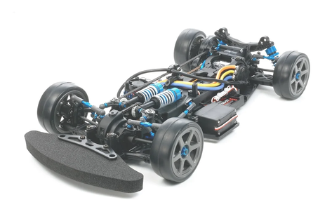
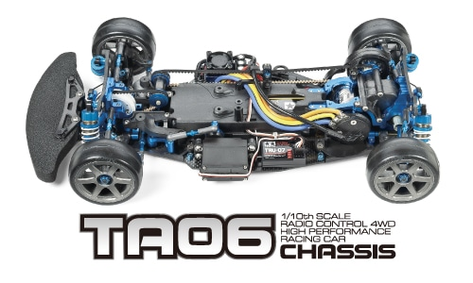
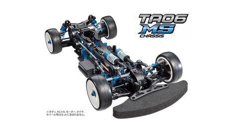
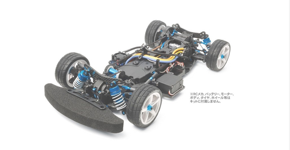

タミヤ TA-06 PRO

引用元画像：タミヤ公式サイト
📋 基本情報
| メーカー | タミヤ（Tamiya） |
|---|---|
| 機種名 | TA-06 PRO |
| 型番 | 58492 |
| 発売時期 | 2011年4月 |
| 生産状況 | 生産終了 |
| カテゴリー | ラジコンカー（1/10スケール 電動RCカー） |
| サブカテゴリー | 4WDツーリングカー（ハイパフォーマンスレーシングシャーシ） |
📏 シャーシスペック
| 全長 | 371mm（シャーシ完成時） |
|---|---|
| 全幅 | 190mm |
| ホイールベース | 257mm |
| トレッド | 前後とも160mm |
| フレーム | モノコックタイプ（センター縦置きバッテリー配置） |
| 重量バランス | ブラシレスモーター・LFバッテリー対応設計 |
⚙️ 駆動系
| 駆動方式 | フロント・2ベルト & リヤ・ギヤダウンによる4WD |
|---|---|
| デフギヤ | 前後ともオイル封入式ギヤデフ |
| ギヤ比 | 6.41:1（キット標準の68Tスパー、23Tピニオン時） |
| モーター | 540タイプ（別売） |
| ベアリング | 駆動系フルベアリング仕様 |
🔧 サスペンション
| 形式 | 4輪ダブルウィッシュボーン |
|---|---|
| フロントサスペンション | IFS（インボードフロントサスペンション）採用 |
| ダンパー | オイルダンパー |
| ステアリング | 3分割タイロッド式 |
💡 特徴
ハイパフォーマンスレーシングシャーシ
- ブラシレスモーター、LFバッテリーなどの新時代パワーソースに対応
- 重量バランスを最適化した設計
- レースでの高性能を追求したシャーシ
革新的な駆動系
- リヤ・ギヤダウン方式採用で低重心化
- フロント・2ベルト駆動で高効率な動力伝達
- センター縦置きバッテリー配置でロール性能向上
高度なサスペンション
- IFS（インボードフロントサスペンション）採用
- 4輪ダブルウィッシュボーン独立懸架
- オイル封入式ギヤデフで滑らかな動力伝達
豊富なバリエーション
- TA-06: 基本モデル
- TA-06 PRO: プロ仕様（本機種）
- TA-06 MS: ミドルシャーシ仕様
- TA-06-R: レース仕様（オプション満載）
- TA-06 PRO (ダブルカルダンドライブシャフト2本付): 限定版
🚗 TA-06シリーズ 派生機種の紹介
TA-06シリーズは、基本モデルから競技向けまで幅広いバリエーションが展開されています。
それぞれの特徴を画像とともにご紹介します。
📘 TA-06（基本モデル）

TA-06 基本シャーシ
特徴
- シリーズの基礎となるモデル
- フロント・2ベルト & リヤ・ギヤダウンの4WD駆動
- モノコックフレーム採用
- コストパフォーマンスに優れる
💡 おすすめポイント：
これからTA-06シリーズを始める方に最適。必要に応じてオプションパーツで強化可能。
📗 TA-06 MS（ミドルシャーシ仕様）

TA-06 MS（ミドルシャーシ）
特徴
- バッテリーをミドルマウント（中央配置）
- 重量バランスの最適化
- アルミミドルプーリーマウント標準装備
- 回転効率向上による加速性能アップ
💡 おすすめポイント：
重量バランスを重視する中級者向け。コーナリング性能が向上。
📕 TA-06-R（レース仕様）

TA-06-R（レース仕様）
特徴
- 高性能オプションパーツを標準装備
- TRFショートダンパー装備
- TRF418用サスアーム・アップライト採用
- カーボン強化パーツ多数
- アルミパーツ各種（ピロボール、ターンバックル等）
- タミヤグランプリ・タミヤチャレンジカップにそのまま参戦可能
🏁 おすすめポイント：
レースで勝利を目指す上級者向け。最初から競技仕様で組まれているため、すぐにレース参戦可能。
📊 TA-06シリーズ 比較表
| モデル | 難易度 | 主な特徴 | 対象ユーザー |
|---|---|---|---|
| TA-06 | ★★☆☆☆ | 基本モデル、コスパ良好 | 初級〜中級者 |
| TA-06 PRO | ★★★☆☆ | 重量バランス最適化 | 中級〜上級者 |
| TA-06 MS | ★★★☆☆ | ミドルシャーシ、回転効率向上 | 中級〜上級者 |
| TA-06-R | ★★★★☆ | レース仕様、高性能パーツ満載 | 上級者・競技者 |
🔧 ぽすとそに工房での修理実績
修理難易度
★★★☆☆（中級者向け、レーシングシャーシ特有の調整が必要）
よくある故障・注意点
- ベルト駆動部分の調整が繊細（張り具合が重要）
- ギヤデフのメンテナンスが定期的に必要
- リヤギヤダウン機構の調整が複雑
- レース用途のため消耗が早い
修理のポイント
- ベルトの張り調整は慎重に（緩すぎ・きつすぎはNG）
- ギヤデフのオイル粘度管理が重要
- 駆動系のフルベアリング仕様のため定期的なグリスアップ推奨
- IFSの調整は手順書を確認しながら作業
その他の特徴
- レース志向の高性能シャーシ
- セッティングの幅が広く、上級者向け
- タミヤグランプリやタミヤチャレンジカップに最適
- 補修部品は現在も入手可能（要確認）